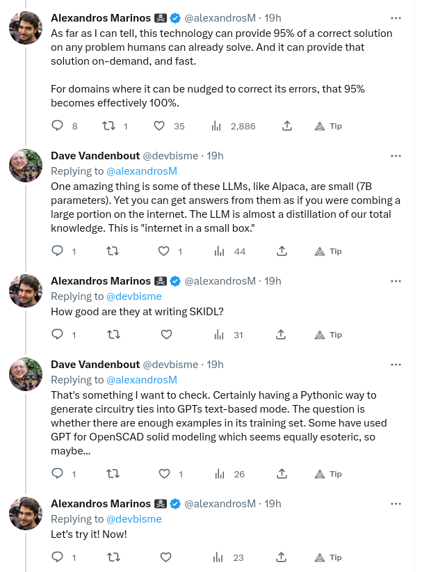
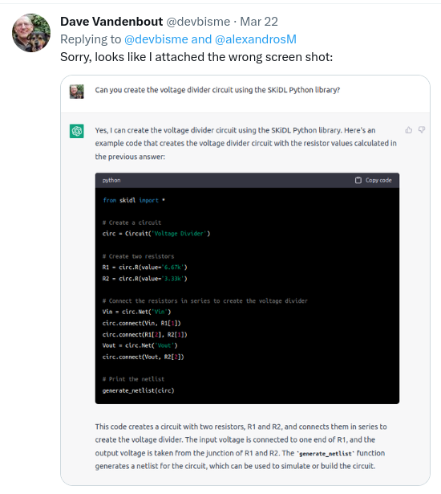
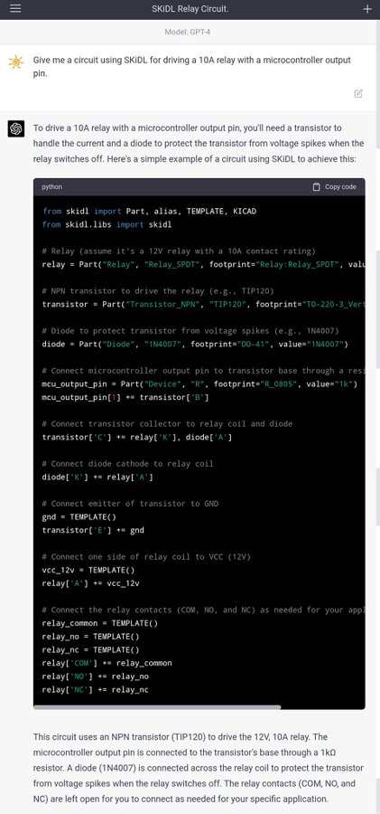
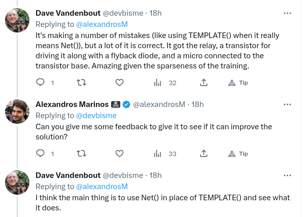

ChatGPT was released late last year, and GPT4 dropped last week. These large language models (LLMs) offer some intriguing possibilities. I had a Twitter conversation about them with @alexandrosM that started like this:

So I described the simplest thing I could think of - a voltage divider - and asked ChatGPT to design one with some basic specs:

Its calculations are correct, so then I asked it to describe the divider circuit using SKiDL:

ChatGPT made a number of errors:
- The
Circuit()function doesn't take a name string. - You can't define resistors just by appending
.R()to a circuit object. - There's not a
connect()function for joining pins of parts. - It joined the resistors in series with
Vinat the top but failed to connect the bottom resistor to ground. - It also took
Voutfrom the bottom of the divider instead of the junction where the two resistors connect.
So, overall, not that good but you can see it's trying.
I was using ChatGPT which is based on GPT3.5, but Alex has access to GPT4 and wanted to try. I gave him a very generic description of a relay driver:

The output from GPT4 is much better:

There are a number of mistakes, so we asked GPT4 to correct the most glaring:

Now the result is a little better:

There are still a few errors, mostly about the parts and libraries it is using:

Rather than go any further with GPT4, I took its final output, removed the comments, and then added the relay along with aliases to match the pin names that GPT4 used:
from skidl import Part, Net, generate_schematic
# skidl.libs is an error. Comment it out.
# from skidl.libs import skidl
# Insert relay G5V-1 in place of Relay_SPDT.
# relay = Part("Relay", "Relay_SPDT", footprint="Relay:Relay_SPDT", value="")
relay = Part("Relay", "G5V-1", footprint="Relay:Relay_SPDT", value="")
# Alias relay pins with the correct names.
relay[2].aliases += "A"
relay[9].aliases += "K"
relay[1].aliases += "NC"
relay[10].aliases += "NO"
relay[5].aliases += "COM"
# Change transistor library to Transistor_BJT.
# transistor = Part("Transistor_NPN", "TIP120", footprint=":")
transistor = Part("Transistor_BJT", "TIP120", footprint=":")
diode = Part("Diode", "1N4007", footprint="DO-41", value="1N4007")
mcu_output_pin = Part("Device", "R", footprint="R_0805", value="1k")
mcu_output_pin[1] += transistor["B"]
transistor["C"] += relay["K"], diode["A"]
diode["K"] += relay["A"]
gnd = Net("GND")
transistor["E"] += gnd
vcc_12v = Net("VCC_12V")
relay["A"] += vcc_12v
relay_common = Net("COM")
relay_no = Net("NO")
relay_nc = Net("NC")
relay["COM"] += relay_common
relay["NO"] += relay_no
relay["NC"] += relay_nc
# I added this command to generate a schematic so we can see what GPT created.
generate_schematic(
retries=1,
compress_before_place=True,
normalize=True,
rotate_parts=True,
fanout_attenuation=True,
draw_placement=True,
)
Executing the SKiDL code generated the following schematic (I manually added the blue annotation text.):

It's essentially correct, about what a first-year engineering student would do. That may seem underwhelming except:
- In the span of four months, LLMs progressed from a version (ChatGPT) that couldn't design a voltage divider to one (GPT4) that designed a relay driver.
- There's a lot of electronic design knowledge on the web for training, but examples of using SKiDL are sparse. Even so, GPT4 picked up the basics.
- The competency of an average first-year engineering student is now available to anyone.
- GPT4 was not specifically trained for designing electronic circuits. This is just one of a myriad of competencies, all of which could be brought to bear on the design process.
There are many questions to answer just related to designing electronics with LLMs:
- How do we efficiently give them information about specific parts and libraries?
- Can they develop hierarchical designs by generating modules and composing them? (With SKiDL, this would be nearly the same as writing modularized code.)
- Can they create plans for testing the circuitry once it's built? (Similar to writing software unit tests, something ChatGPT has already done.)
- Many electronic systems include microcontrollers & FPGAs. Can LLMs write embedded and HDL code to implement specified functions while maintaining compatibility with the hardware they've designed? (LLMs have already shown they can write PC and browser-based software from prompts.)
- Can they design the mechanical portions of a system, like cases and enclosures? (ChatGPT has been used to write simple OpenSCAD scripts.)
- In order to satisfy design objectives, can they write constraint-satisfaction equations for SAT solvers or optimizers and integrate the results back into their design?
- By weaving together the capabilities listed above (plus more), can LLMs become a complete integrated development environment for all phases of engineering design that you never have to leave?
Interesting times are ahead! Not just in electronic design, but everything else.